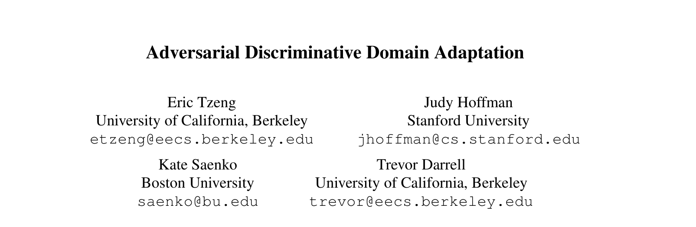
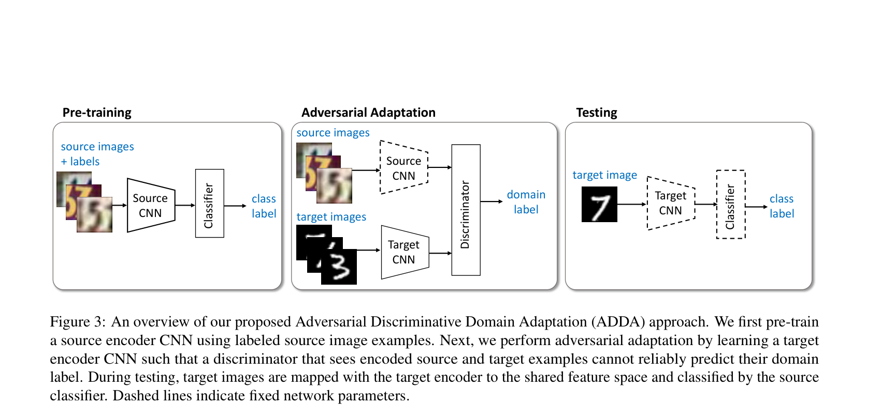
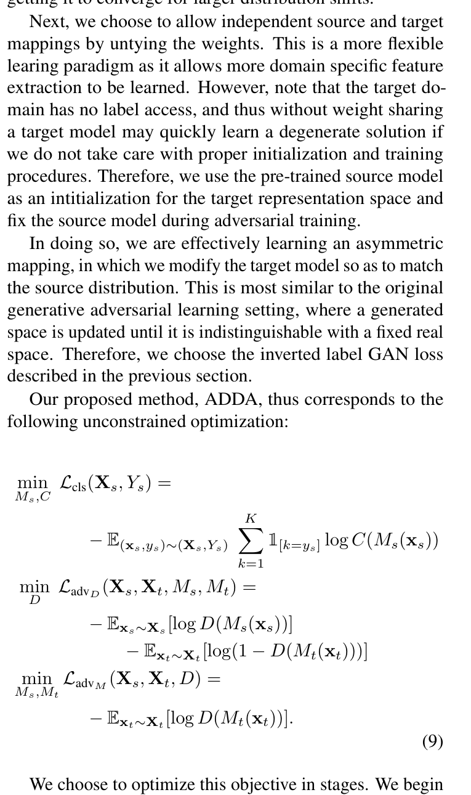
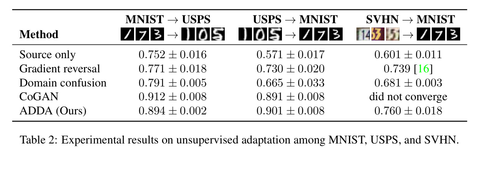
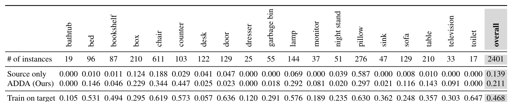
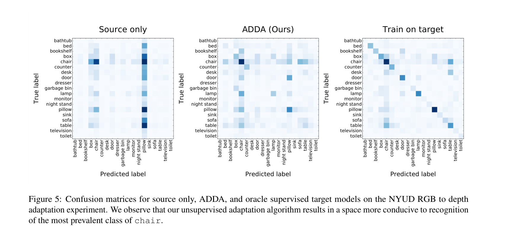

mentor paper report · 2026-04-28
源域有标签、目标域无标签时，用对抗学习对齐特征空间，让分类器跨域迁移。

overview
域偏移为什么让模型失效；我们的缺陷检测痛点。
三阶段训练流程、对抗对齐原理、权重不共享的设计。
数字数据集跨域结果、NYUD 跨模态迁移、对比分析。
能否用到电池缺陷检测、局限与风险、组合方案建议。
01 · the problem we face
划痕、正常、其他缺陷类别提供监督信号。分类器在五款上表现很好。
第六款电池的材质、光照、纹理变了，特征空间偏移，分类器失准。
暂时无法重新标注，需要无监督或半监督方法弥合域差距。
02 · domain shift
相同缺陷在不同产品上成像差异大
光照、材质、纹理、相机参数不同
特征空间按产品聚类
划痕物理形态类似
但图像特征分布与前五款差异大
源域分类器无法覆盖
理想状态下，同类缺陷应聚在一起；但域偏移让特征按产品线分离，缺陷语义被淹没。
03 · why this paper
源域有标签 (Xs, Ys)，目标域只有图像 Xt，没有标签。希望模型在目标域上也能正确分类。
训练一个域判别器区分源/目标特征，再训练目标编码器欺骗判别器，从而拉近两个域的特征分布。
不生成目标域图像，只对齐特征空间。更轻量、更稳定，尤其适合分类任务。
04 · framework overview
1. 基础模型：预训练网络初始化，还是从头训练？
2. 权重共享：源/目标编码器共享全部、部分、还是不共享权重？
3. 对抗损失：用什么方式做对抗——梯度反转、域混淆、还是 GAN loss？
4. 判别 vs 生成：只对齐特征，还是同时生成目标域图像？
预训练初始化：用 ImageNet 预训练权重作为起点。
不共享权重：源编码器固定，目标编码器独立学习。允许目标域有自己的低层纹理映射。
GAN loss：目标编码器通过欺骗域判别器来学习对齐。
判别式：不生成图像，只做特征对齐，更适合分类任务。
05 · training pipeline
用源域标签训练源编码器 Ms 和分类器 C。
目标：最小化分类损失 Lcls，让分类器在源域上表现好。
此阶段完成后，Ms 和 C 的参数固定。
固定 Ms，训练域判别器 D 和目标编码器 Mt。
D 学习区分源/目标特征；Mt 学习欺骗 D。
对抗博弈让 Mt(Xt) ≈ Ms(Xs)。
测试时只用目标编码器 + 源分类器。
输入目标图像 → Mt 提取特征 → C 输出分类。
不需要判别器 D，也不需要目标域标签。
06 · architecture diagram

Source CNN 训练后固定（虚线），Target CNN 单独学习自己的低层映射。
域判别器 D 只在第二阶段参与，推理时不需要。
Source CNN = 前五款电池特征提取器；Target CNN = 第六款电池特征提取器。
分类器 C 复用前五款的缺陷分类头，不需要重新训练。
07 · math

min L_cls(X_s, Y_s)
min L_advD = -E[log D(M_s(x_s))] - E[log(1-D(M_t(x_t)))]
min L_advM = -E[log D(M_t(x_t))]
08 · intuition
源域和目标域特征分布差异大
源域分类边界在目标域上失效
模型预测塌缩：全部预测为多数类
目标域特征被拉到源域特征空间
源域分类边界可以继续使用
预测分布更分散，更接近有监督结果
09 · design choice
源和目标用同一套底层特征提取器
底层特征被"绑死"，无法适应目标域特有纹理
当域偏移较大时，共享底层可能反而限制对齐
代表方法：DANN (梯度反转)、Domain Confusion
目标编码器可以学习目标域特有的低层映射
源编码器固定，保留源域判别性特征
对抗约束只作用于高层特征空间
在 SVHN → MNIST (大域偏移) 上明显更稳定
不同电池型号的表面纹理差异可能很大——光泽度、颗粒感、反光模式都不同。让目标编码器独立学习底层映射，可以更好地捕捉第六款电池特有的纹理特征。
10 · prerequisite
ADDA 必须有目标域图像 Xt 来训练目标编码器和判别器。
如果第六款电池连无标签图像都没有，ADDA 无法启动。
ADDA 对齐的是边缘分布 P(X)，不是条件分布 P(Y|X)。
如果目标域只有正常样本，划痕子空间可能无法被正确对齐。
ADDA 假设源域和目标域共享相同的类别标签集合。
如果第六款出现了前五款没有的缺陷类型，ADDA 无法处理。
11 · evidence

12 · cross-modal evidence
RGB 图像和深度/HHA 图的成像原理完全不同，是最接近工业跨域的场景。
整体准确率提升显著。无目标标签时，对抗对齐带来了 7 个百分点以上的提升。
某些类别在适应后仍然无法恢复——这对缺陷检测是重要警示。

13 · qualitative evidence

目标域预测严重塌缩
大部分样本被预测为同一个多数类
混淆矩阵呈现"一列高、其余低"
预测分布更分散、更均匀
更接近有目标域监督训练的结果
但仍有部分类别恢复不完全
14 · application
前五款作源域、第六款正常图像作目标域，ADDA 可以削弱产品外观域偏移。
只需要第六款的无标签图像就能启动对抗对齐。产线正常品图像即可。
ADDA 对齐边缘分布，不保证划痕子空间被正确对齐。如果第六款无标签数据中没有划痕，对抗对齐看不到目标域划痕的真实形态。
M_s(X_s) ≈ M_t(X_t)
边缘特征分布对齐
P_s(Y|M_s(X_s)) ≈ P_t(Y|M_t(X_t))
类别条件分布对齐
15 · proposed solution
五款电池作为多源域，提供更丰富的缺陷特征覆盖。
用对抗对齐削弱产品外观域偏移，作为域适应基线。
加入原型约束或 MMD/CORAL，保证划痕子空间也正确对齐。
对第六款少量高不确定性样本做人工标注，弥补条件分布对齐不足。
用正常样本 PCA 残差或 Mahalanobis 距离做异常检测，覆盖未知的缺陷类型。
16 · summary
清晰的无监督域适应框架：源域预训练 → 对抗对齐 → 目标推理
判别式方法比生成式更稳定，尤其是大域偏移下
不共享权重设计允许目标域有独立低层映射
作为域适应基线，方法简洁、实验充分
只对齐边缘分布，不保证类别条件对齐
目标域无标签数据中必须有缺陷样本覆盖
不能处理开放集或新类别场景
不适合单独作为工业缺陷迁移的最终方案